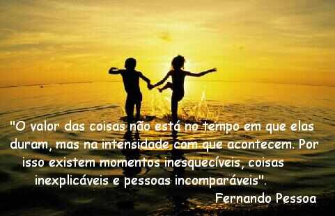

“Ser feliz é encontrar força no perdão, esperanças nas batalhas, segurança no palco do medo, amor nos desencontros. É agradecer a Deus a cada minuto pelo milagre da vida.” ―Fernando Pessoa
“Dizem que a vida é para quem sabe viver, mas ninguém nasce pronto. A vida é para quem é corajoso o suficiente para se arriscar e humilde o bastante para aprender.” ―Clarice Lispector
"Pessoas são como músicas: Algumas, nós gostamos desde o início, outras gostamos depois de um tempo. São feitas para serem ouvidas e compreendidas. Algumas tocam a nossa vida, mas tem uma, aquela mais especial, que é a nossa trilha sonora".
"Com o tempo, você vai percebendo que para ser feliz com uma outra pessoa, você precisa, em primeiro lugar, não precisar dela. Percebe também que aquele alguém que você ama (ou acha que ama) e que não quer nada com você, definitivamente não é o "alguém" da sua vida. Você aprende a gostar de você, a cuidar de você e, principalmente, a gostar de quem também gosta de você. O segredo é não correr atrás das borboletas... é cuidar do jardim para que elas venham até você. No final das contas, você vai achar não quem você estava procurando, mas quem estava procurando por você""!
""...Um dia descobrimos que beijar uma pessoa para esquecer outra, é bobagem. Você não só não esquece a outra pessoa como pensa muito mais nela... Um dia nós percebemos que as mulheres têm instinto "caçador" e fazem qualquer homem sofrer ... Um dia descobrimos que se apaixonar é inevitável... Um dia percebemos que as melhores provas de amor são as mais simples... Um dia percebemos que o comum não nos atrai... Um dia saberemos que ser classificado como "bonzinho" não é bom... Um dia perceberemos que a pessoa que nunca te liga é a que mais pensa em você... Um dia saberemos a importância da frase: "Tu te tornas eternamente responsável por aquilo que cativas..." Um dia percebemos que somos muito importante para alguém, mas não damos valor a isso... Um dia percebemos como aquele amigo faz falta, mas ai já é tarde demais... Enfim... Um dia descobrimos que apesar de viver quase um século esse tempo todo não é suficiente para realizarmos todos os nossos sonhos, para beijarmos todas as bocas que nos atraem, para dizer o que tem de ser dito... O jeito é: ou nos conformamos com a falta de algumas coisas na nossa vida ou lutamos para realizar todas as nossas loucuras... Quem não compreende um olhar tampouco compreenderá uma longa explicação.""